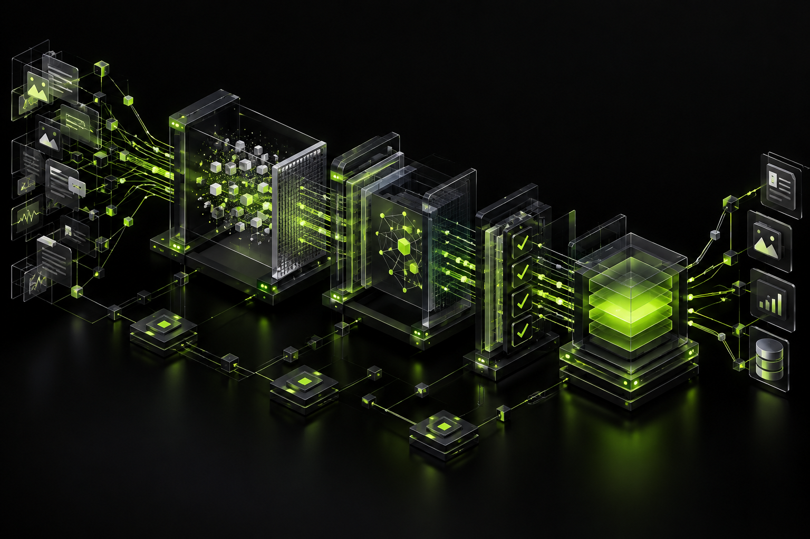

НЕЗАВИСИМАЯ ИНЖЕНЕРНАЯ ПРАКТИКА№ 001 — 026
Сложные системы.
Простые интерфейсы.
Проектирую и создаю цифровые продукты. Специализация — интеграция ИИ-решений (RAG, агенты) в существующие бизнес-процессы. Не обещаю "магию", а строю работающие инструменты
ЛОКАЦИЯ
Павлово, Нижегородская область
55°58′ N · 43°04′ E
 СИСТЕМЫ
ДАННЫЕ
ИНТЕРФЕЙСЫ
СИСТЕМЫ
ДАННЫЕ
ИНТЕРФЕЙСЫ
01 / ИЗБРАННЫЕ РЕШЕНИЯ
09 / 2022–26Избранные проекты.
02 / ИНЖЕНЕРНЫЙ УКАЗАТЕЛЬ
Инженерный индекс.
Инструменты, архитектурные заметки
и рабочие пространства.
Ничего не найдено. Попробуйте изменить фильтр.
ЦЯ
2026
2026
03 / ПРИНЦИПЫСначала ясность.
Сначала ясность.
Затем — система.
Исследую задачу, выделяю главное и проектирую понятное решение. В основе — аккуратная инженерия, детерминированная логика и интерфейс, который не мешает работе.
01 ЯСНОСТЬ02 НАДЁЖНОСТЬ03 МАСТЕРСТВО
04 / ЭКСПЕРТИЗА И МЕТОДОЛОГИЯ
Архив исследований и инженерных публикаций на vc.ru
Системные ограничения LLM, архитектурные сбои, семантический дрейф, детерминированные контуры проверки и методология разработки с помощью ИИ. Более 50 публикаций, последовательно развивающих идеи — от анализа ошибок генерации до проектирования управляемых интеллектуальных систем.
Ключевые направления:
- Архитектура ИИ и системные причины ошибок.
- Методологии проверки, Red Team-аудита и борьбы с AI-мусором.
- Детерминированные конвейеры и формализация логики.
- Организация совместной работы человека и ИИ.
